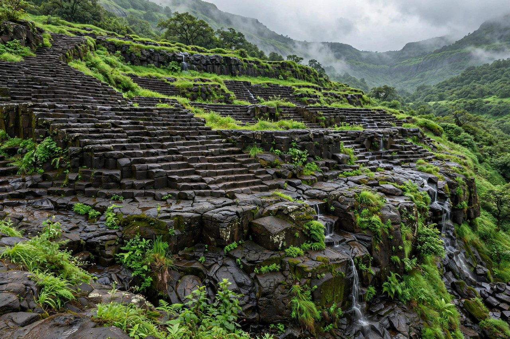

| Location | West-central India (Maharashtra and neighboring states) |
|---|---|
| Type | Large igneous province, flood basalt |
| Area | ~500,000 km² (originally perhaps 1.5 million km²) |
| Age | ~66.3–65.5 million years (end Cretaceous) |
| Maximum thickness | ~2,000 m near the Western Ghats |

The Deccan Traps are a large igneous province of west-central India. They are one of the largest volcanic features on Earth, consisting of multiple layers of solidified flood basalt that together form a stack more than 2,000 metres (6,600 ft) thick in places, covering an area of about 500,000 km². The word "trap" comes from the Swedish word for stairs (trappa), referring to the step-like hills of the formation.
The traps were formed by enormous eruptions around 66 million years ago, at the end of the Cretaceous Period, probably from the Réunion hotspot as the Indian plate moved over it. Over less than a million years, more than a million cubic kilometres of basaltic lava poured out, accompanied by huge releases of carbon dioxide and sulphur gases.
Because the main eruptive phase coincides with the Cretaceous–Paleogene extinction event, the Deccan Traps have long been proposed as a cause or contributor to the mass extinction through climate change: sulphur aerosols causing cooling and acid rain, and carbon dioxide causing longer-term warming. High-precision dating suggests the largest eruptions straddled the boundary, and debate continues over how the volcanic effects combined with the Chicxulub impact — including whether the impact itself intensified the eruptions.
The traps underlie much of Maharashtra and parts of Gujarat, Madhya Pradesh, Karnataka and Andhra Pradesh. Erosion has sculpted the basalt into the dramatic escarpments of the Western Ghats, a UNESCO World Heritage Site, and produced the black cotton soils (regur) famous for agriculture.
From Wikipedia, the free encyclopedia. Recreated from memory.